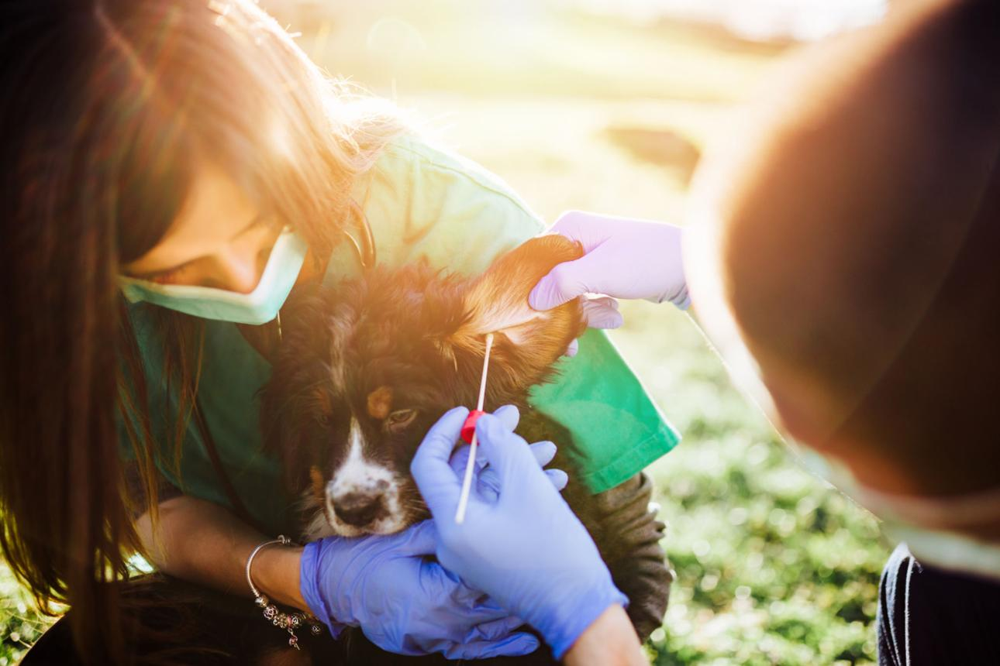
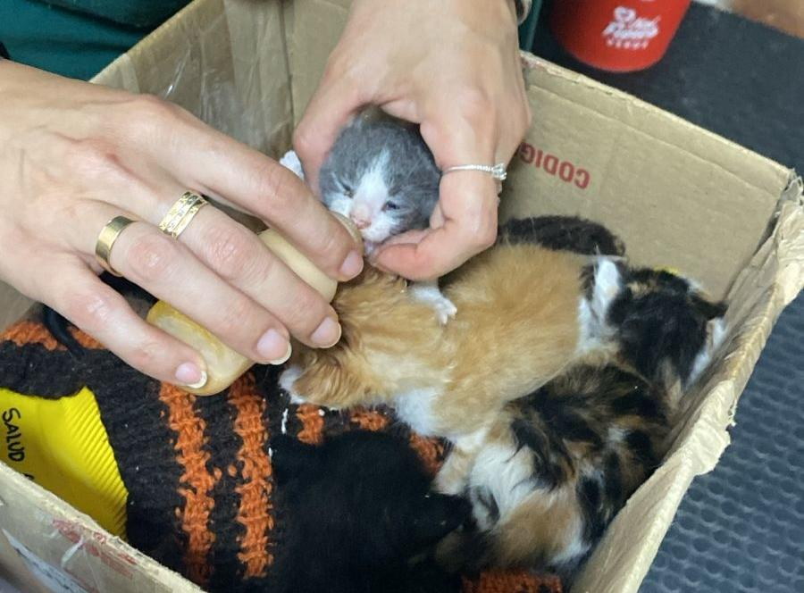

¿Qué hacemos?
En Huella de Esperanza rescatamos perros y gatos en situación de abandono, maltrato o riesgo. Muchos necesitan atención veterinaria y un espacio seguro mientras se recuperan.
Nuestro programa de Hogar Temporal permite que estos animales reciban cariño, alimentación y socialización hasta que encuentren una familia definitiva.
Nuestros proyectos

Patitas en Recuperación
Ayudamos a perros rescatados que necesitan atención veterinaria, alimentación especial y cuidados antes de ser adoptados.

Mininos Seguros
Programa orientado al rescate y cuidado temporal de gatos en situación de calle, brindándoles refugio y protección.

Familias que Transforman
Compartimos historias de hogares temporales que ayudaron a cambiar la vida de nuestros rescatados hasta encontrar su hogar definitivo.
¿Por qué ser hogar temporal?
¿Querés sumarte?
Si te gustaría convertirte en hogar temporal y ayudar a nuestros rescatados, contactanos.
Quiero colaborar